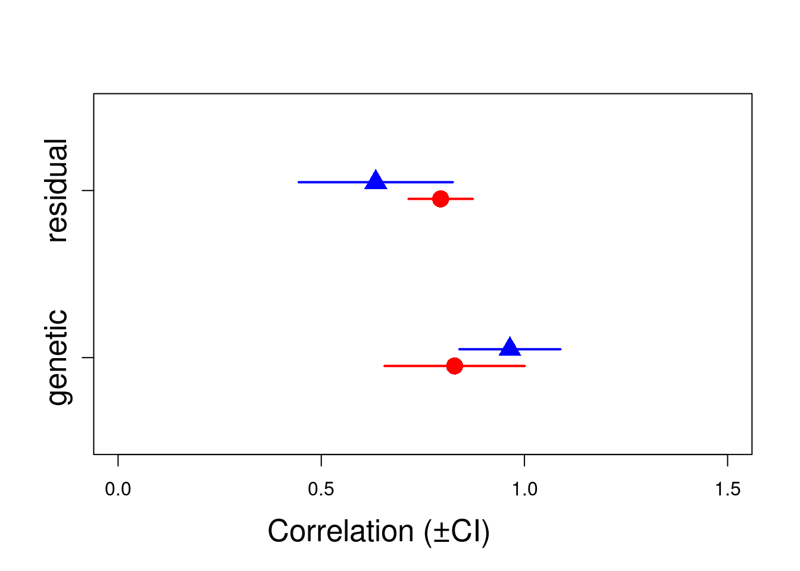

library(asreml)Loading required package: Matrix
Attaching package: 'Matrix'The following objects are masked from 'package:tidyr':
expand, pack, unpackOnline License checked out Tue Oct 8 11:28:37 2024Loading ASReml-R version 4.2First we need to load the asreml library:
library(asreml)Loading required package: Matrix
Attaching package: 'Matrix'The following objects are masked from 'package:tidyr':
expand, pack, unpackOnline License checked out Tue Oct 8 11:28:37 2024Loading ASReml-R version 4.2For running multivariate analyses in ASReml-R, the code is slightly more complex than for the univariate case. This is because ASReml-R allows us to make different assumptions about the way in which traits might be related. We need to explicitly specify a covariance structure with difference covariance functions us(), idh() or corgh() which for example would estimate an unconstrained (co)variance matrix, an identity matrix and a variance and correlation matrix repestively. We can also specify some starting values for the variance matrices. These can be very approximate guestimates or not at all, but having reasonable starting values can help convergence. It is also possible to let the model running without specifying starting values. Finally, we have increased the default maximum number of iterations (maxiter) which can help to achieve convergence for more complicated models. Another way to increase the number of iteration will be to use the update function. Notes that if the LogLik is not stabilized after several iterations, it is good indication of the model require more iteration.
ainv <- ainverse(gryphonped)
modela <- asreml(
fixed = cbind(bwt, tarsus) ~ trait,
random = ~ us(trait, init = c(1, 0.1, 1)):vm(animal, ainv),
residual = ~ id(units):us(trait, init = c(1, 0.1, 1)),
data = gryphon,
na.action = na.method(x = "include", y = "include"),
maxit = 20
)ASReml Version 4.2 08/10/2024 11:28:37
LogLik Sigma2 DF wall
1 -7108.741 1.0 1535 11:28:37
2 -5837.803 1.0 1535 11:28:37
3 -4437.495 1.0 1535 11:28:37
4 -3459.378 1.0 1535 11:28:37
5 -2914.034 1.0 1535 11:28:37
6 -2729.131 1.0 1535 11:28:37
7 -2684.659 1.0 1535 11:28:37
8 -2679.838 1.0 1535 11:28:37
9 -2679.742 1.0 1535 11:28:37
10 -2679.741 1.0 1535 11:28:37modela <- update(modela)ASReml Version 4.2 08/10/2024 11:28:37
LogLik Sigma2 DF wall
1 -2679.741 1.0 1535 11:28:37
2 -2679.741 1.0 1535 11:28:37modela has fitted a bivariate model of bwt and tarsus, with the mean for each of the traits as a fixed effect (trait). The additive genetic variance-covariance matrix (\(\textbf{G}\)) is unstructured (us; i.e. all elements are free to vary) and the starting values for \(V_A\) for bwt, \(COV_A\) between bwt and tarsus, and \(V_A\) for tarsus are set to 1, 0.1 and 1, respectively. Similarly, the residual matrix is unstructured and uses the same starting values.
Note that the argument na.action = na.method(x = "include", y = "include") can be added to the model. In a bivariate model, it will help calculate the covariance between two traits with different missing information NA and so help imbalance phenotypage and save sample size. However, it is important to scale ( mean =0, var =1) the two traits to correctly adjust the model(see Asreml-R manual for more information).
Let’s have a look at the variance components, and notice that there are now seven (co)variance components reported in the table:
summary(modela)$varcomp component std.error z.ratio bound
trait:vm(animal, ainv)!trait_bwt:bwt 3.368397 0.6348307 5.305977 P
trait:vm(animal, ainv)!trait_tarsus:bwt 2.459809 1.0732644 2.291895 P
trait:vm(animal, ainv)!trait_tarsus:tarsus 12.345792 3.0744285 4.015638 P
units:trait!R 1.000000 NA NA F
units:trait!trait_bwt:bwt 3.849916 0.5200101 7.403541 P
units:trait!trait_tarsus:bwt 3.313282 0.9129234 3.629310 P
units:trait!trait_tarsus:tarsus 17.646432 2.6670380 6.616491 P
%ch
trait:vm(animal, ainv)!trait_bwt:bwt 0
trait:vm(animal, ainv)!trait_tarsus:bwt 0
trait:vm(animal, ainv)!trait_tarsus:tarsus 0
units:trait!R 0
units:trait!trait_bwt:bwt 0
units:trait!trait_tarsus:bwt 0
units:trait!trait_tarsus:tarsus 0The first three terms are related to the genetic matrix and, in order are \(V_{A,bwt}\), \(COV_A\), \(V_{A, tarsus}\). Below is again a line where the units:traitr!R component equals to 1, which again can be ignored. The final three terms relate to the residual matrix and correspond to \(V_{R,bwt}\), \(COV_R\), \(V_{R,tarsus}\). Based on our quick and dirty check (is z.ratio > 1.96?) all components look to be statistically significant.
We can calculate the genetic correlation as \(COV_A / \sqrt{V_{A,bwt} \cdot V_{A,tarsus}}\). Thus this model gives an estimate of \(r_A\) = 0.38. It is also possible to estimate the residual correlation \(r_{res}\) = 0.4.
Both correlations are distinct in nature. The genetic correlation reflects how much the traits are linked by genetic via polygenic effect or linkage desequilibrium, whereas the residual correlation reflects the environmental correlation or errors measurement correlation.
Although we can calculate this by hand, we can also use vpredict(), which also provides an (approximate) standard error:
Estimate SE
r_A 0.3814436 0.1299759 Estimate SE
r_res 0.4019799 0.08607104Of course we can also calculate the heritability of bwt and tarsus from this model:
Fixed and random effects can be added just as for the univariate case. Given that our full model of bwt from tutorial 1 had sex as a fixed effect as well as birth year and mother as random effects, we could specify a bivariate formulation with the same complexity:
modelb <- asreml(
fixed = cbind(bwt, tarsus) ~ trait + at(trait):sex,
random = ~ us(trait, init = c(1, 0.1, 1)):vm(animal, ainv) +
us(trait, init = c(1, 0.1, 1)):byear +
us(trait, init = c(1, 0.1, 1)):mother,
residual = ~ id(units):us(trait, init = c(1, 0.1, 1)),
data = gryphon,
na.action = na.method(x = "include", y = "include"),
maxit = 20
)ASReml Version 4.2 08/10/2024 11:28:37
LogLik Sigma2 DF wall
1 -4672.301 1.0 1533 11:28:38
2 -4005.616 1.0 1533 11:28:38
3 -3271.484 1.0 1533 11:28:38 ( 1 restrained)
4 -2761.414 1.0 1533 11:28:38 ( 1 restrained)
5 -2481.355 1.0 1533 11:28:38
6 -2395.858 1.0 1533 11:28:38
7 -2381.050 1.0 1533 11:28:38
8 -2380.251 1.0 1533 11:28:38
9 -2380.246 1.0 1533 11:28:38modelb <- update(modelb)ASReml Version 4.2 08/10/2024 11:28:38
LogLik Sigma2 DF wall
1 -2380.246 1.0 1533 11:28:38
2 -2380.246 1.0 1533 11:28:38Note that we have specified a covariance structure for each random effect and an estimate of the effect of sex on both birth weight and tarsus length.
There will now be thirteen (co)variance components reported after running the code:
summary(modelb)$varcomp component std.error z.ratio
trait:byear!trait_bwt:bwt 0.9746385 0.2825727 3.4491602
trait:byear!trait_tarsus:bwt 0.1624076 0.4185079 0.3880635
trait:byear!trait_tarsus:tarsus 3.7383721 1.2065992 3.0982716
trait:mother!trait_bwt:bwt 1.1445184 0.2302182 4.9714512
trait:mother!trait_tarsus:bwt -1.5567306 0.4051848 -3.8420260
trait:mother!trait_tarsus:tarsus 4.8206132 1.3201300 3.6516202
trait:vm(animal, ainv)!trait_bwt:bwt 1.9893546 0.4410246 4.5107569
trait:vm(animal, ainv)!trait_tarsus:bwt 3.3170404 0.9032323 3.6724110
trait:vm(animal, ainv)!trait_tarsus:tarsus 10.2294887 2.8077066 3.6433610
units:trait!R 1.0000000 NA NA
units:trait!trait_bwt:bwt 1.8443110 0.3443178 5.3564203
units:trait!trait_tarsus:bwt 4.0142841 0.7412540 5.4155308
units:trait!trait_tarsus:tarsus 12.4845955 2.2893363 5.4533690
bound %ch
trait:byear!trait_bwt:bwt P 0
trait:byear!trait_tarsus:bwt P 0
trait:byear!trait_tarsus:tarsus P 0
trait:mother!trait_bwt:bwt P 0
trait:mother!trait_tarsus:bwt P 0
trait:mother!trait_tarsus:tarsus P 0
trait:vm(animal, ainv)!trait_bwt:bwt P 0
trait:vm(animal, ainv)!trait_tarsus:bwt P 0
trait:vm(animal, ainv)!trait_tarsus:tarsus P 0
units:trait!R F 0
units:trait!trait_bwt:bwt P 0
units:trait!trait_tarsus:bwt P 0
units:trait!trait_tarsus:tarsus P 0we can estimate the different correlations using vpredict:
Estimate SE
r_byear 0.08508312 0.2134209 Estimate SE
r_M -0.6627518 0.2487963 Estimate SE
r_A 0.7353053 0.1094747 Estimate SE
r_res 0.8365729 0.07366762Now we can look at the fixed effects parameters and assess their significance with a conditional Wald F-test:
summary(modelb, coef = TRUE)$coef.fi solution std error z.ratio
trait_bwt 6.3844483 0.2328210 27.4221324
trait_tarsus 20.5936436 0.5098944 40.3880569
at(trait, 'bwt'):sex_1 0.0000000 NA NA
at(trait, 'bwt'):sex_2 1.9502053 0.1480467 13.1729086
at(trait, 'tarsus'):sex_1 0.0000000 NA NA
at(trait, 'tarsus'):sex_2 -0.0684413 0.3823448 -0.1790041wald.asreml(modelb, denDF = "default", ssType = "conditional")$WaldASReml Version 4.2 08/10/2024 11:28:38
LogLik Sigma2 DF wall
1 -2380.246 1.0 1533 11:28:39
2 -2380.246 1.0 1533 11:28:39[0;34m
Wald tests for fixed effects.[0m
[0;34mResponse: cbind(bwt, tarsus)[0m
Df denDF F.inc F.con Margin Pr
trait 2 52.6 1396.00 1396.00 0.00000
at(trait, 'bwt'):sex 1 812.8 298.40 173.50 B 0.00000
at(trait, 'tarsus'):sex 1 747.9 0.03 0.03 B 0.85798Note that it is possible to specify a fixed effect to a specific trait by adding the number of order within cbind inside the argument at(trait,x). For example, here we apply the fixed effect sex only to the response variable tarsus.
modelb_2 <- asreml(
fixed = cbind(bwt, tarsus) ~ trait + at(trait, 2):sex,
random = ~ us(trait, init = c(1, 0.1, 1)):vm(animal, ainv) +
us(trait, init = c(1, 0.1, 1)):byear +
us(trait, init = c(1, 0.1, 1)):mother,
residual = ~ id(units):us(trait, init = c(1, 0.1, 1)),
data = gryphon,
na.action = na.method(x = "include", y = "include"),
maxit = 20
)ASReml Version 4.2 08/10/2024 11:28:40
LogLik Sigma2 DF wall
1 -4810.563 1.0 1534 11:28:40
2 -4129.799 1.0 1534 11:28:40
3 -3382.529 1.0 1534 11:28:40 ( 1 restrained)
4 -2864.076 1.0 1534 11:28:40
5 -2574.891 1.0 1534 11:28:40
6 -2478.879 1.0 1534 11:28:40
7 -2458.305 1.0 1534 11:28:40
8 -2456.425 1.0 1534 11:28:40
9 -2456.377 1.0 1534 11:28:40
10 -2456.376 1.0 1534 11:28:40summary(modelb_2, coef = TRUE)$coef.fi solution std error z.ratio
trait_bwt 7.636226 0.2389515 31.95722
trait_tarsus 22.703658 0.4827348 47.03133
at(trait, 'tarsus'):sex_1 0.000000 NA NA
at(trait, 'tarsus'):sex_2 -3.267042 0.2953279 -11.06242wald.asreml(modelb_2, denDF = "default", ssType = "conditional")$WaldASReml Version 4.2 08/10/2024 11:28:40
LogLik Sigma2 DF wall
1 -2456.376 1.0 1534 11:28:40
2 -2456.376 1.0 1534 11:28:40[0;34m
Wald tests for fixed effects.[0m
[0;34mResponse: cbind(bwt, tarsus)[0m
Df denDF F.inc F.con Margin Pr
trait 2 50.7 1233.0 1233.0 0
at(trait, 'tarsus'):sex 1 522.9 122.4 122.4 B 0Under the model above \(r_M\) is estimated as -0.66 and the z.ratio associated with the corresponding covariance (\(COV_M\)) is >2 (in absolute terms). We might therefore infer that there is evidence for a strong negative correlation between the traits with respect to the mother and that while maternal identity explains variance in both traits those mothers that tend to produce heavier offspring actually tend to produce offspring with shorter tarsus lengths.
To formally test if \(COV_M\) is significantly different from zero, we can compare the log-likelihood for this model:
modelb$loglik[1] -2380.246to a model in which we specify that \(COV_M\)=0. Since this constraint reduces the number of parameters to be estimated by one, we can use a likelihood ratio test (LRT) with one degree of freedom. To run the constrained model, we modify the G structure defined for the mother random effect to diagonal (diag), which means we only estimate the variances (the diagonal of the matrix) but not the covariance (the covariance are fixed to 0):
modelc <- asreml(
fixed = cbind(bwt, tarsus) ~ trait + at(trait):sex,
random = ~ us(trait, init = c(1, 0.1, 1)):vm(animal, ainv) +
us(trait, init = c(1, 0.1, 1)):byear +
diag(trait, init = c(1, 1)):mother,
residual = ~ id(units):us(trait, init = c(1, 0.1, 1)),
data = gryphon,
na.action = na.method(x = "include", y = "include"),
maxit = 20
)ASReml Version 4.2 08/10/2024 11:28:41
LogLik Sigma2 DF wall
1 -4677.820 1.0 1533 11:28:41
2 -4010.442 1.0 1533 11:28:41
3 -3275.409 1.0 1533 11:28:41
4 -2763.519 1.0 1533 11:28:41
5 -2483.732 1.0 1533 11:28:41
6 -2400.242 1.0 1533 11:28:41
7 -2386.663 1.0 1533 11:28:41
8 -2386.049 1.0 1533 11:28:41
9 -2386.045 1.0 1533 11:28:41You can run summary(modelc)$varcomp to confirm this worked. We can now obtain the log-likelihood of this model and compare this to that of modelb using a likelihood ratio test:
modelc$loglik[1] -2386.045We can see that the model log-likelihood is now -2386.05. And comparing the models using a likelihood ratio test:
2 * (modelb$loglik - modelc$loglik)[1] 11.59835So our chi-square test statistic is \(\chi^2_1\)= 11.6. The p-value that goes with this is obtained by:
1 - pchisq(2 * (modelb$loglik - modelc$loglik), 1)[1] 0.0006601037We would therefore conclude that the maternal covariance is significantly different from zero.
We could apply the same procedure to show that the residual (environmental) covariance and the genetic covariance estimates are significantly greater than zero (i.e., heavier individuals tend to have longer tarsus lengths). In contrast, we should find that the byear covariance between the two traits is non-significant.
modeld <- asreml(
fixed = cbind(bwt, tarsus) ~ trait + at(trait):sex,
random = ~ us(trait, init = c(1, 0.1, 1)):vm(animal, ainv) +
diag(trait, init = c(1, 1)):byear +
us(trait, init = c(1, 0.1, 1)):mother,
residual = ~ id(units):us(trait, init = c(1, 0.1, 1)),
data = gryphon,
na.action = na.method(x = "include", y = "include"),
maxit = 20
)ASReml Version 4.2 08/10/2024 11:28:41
LogLik Sigma2 DF wall
1 -4672.708 1.0 1533 11:28:42
2 -4005.954 1.0 1533 11:28:42
3 -3271.738 1.0 1533 11:28:42 ( 1 restrained)
4 -2761.626 1.0 1533 11:28:42 ( 1 restrained)
5 -2481.647 1.0 1533 11:28:42
6 -2395.992 1.0 1533 11:28:42
7 -2381.136 1.0 1533 11:28:42
8 -2380.331 1.0 1533 11:28:42
9 -2380.326 1.0 1533 11:28:422 * (modelb$loglik - modeld$loglik)[1] 0.16006411 - pchisq(2 * (modelb$loglik - modeld$loglik), 1)[1] 0.6890975Within Asreml-r, different matrix structure can be specify such as us,corg, diag, etc (cf see the Asreml-r guide). Instead of the fitting an unstructured matrix with the argument us or a reduced model with no covariance with the argument diag, we can also directly estimate the genetic correlation between the bwt and tarsus with corgh.
Here we decide to estimate directly the additive genetic correlation.
modele <- asreml(
fixed = cbind(bwt, tarsus) ~ trait + at(trait):sex,
random = ~ corgh(trait, init = c(0.1, 1, 1)):vm(animal, ainv) +
us(trait, init = c(1, 0.1, 1)):byear +
us(trait, init = c(1, 0.1, 1)):mother,
residual = ~ id(units):us(trait, init = c(1, 0.1, 1)),
data = gryphon,
na.action = na.method(x = "include", y = "include"),
maxit = 20
)ASReml Version 4.2 08/10/2024 11:28:42
LogLik Sigma2 DF wall
1 -4672.301 1.0 1533 11:28:42
2 -4003.183 1.0 1533 11:28:42
3 -3266.521 1.0 1533 11:28:42 ( 1 restrained)
4 -2757.188 1.0 1533 11:28:42 ( 1 restrained)
5 -2479.291 1.0 1533 11:28:42
6 -2395.476 1.0 1533 11:28:42
7 -2381.026 1.0 1533 11:28:42
8 -2380.251 1.0 1533 11:28:42
9 -2380.246 1.0 1533 11:28:42modele <- update(modele)ASReml Version 4.2 08/10/2024 11:28:42
LogLik Sigma2 DF wall
1 -2380.246 1.0 1533 11:28:42
2 -2380.246 1.0 1533 11:28:43summary(modele)$varcomp component std.error
trait:byear!trait_bwt:bwt 0.9746386 0.2825728
trait:byear!trait_tarsus:bwt 0.1624071 0.4185082
trait:byear!trait_tarsus:tarsus 3.7383734 1.2066018
trait:mother!trait_bwt:bwt 1.1445186 0.2302183
trait:mother!trait_tarsus:bwt -1.5567316 0.4051850
trait:mother!trait_tarsus:tarsus 4.8206154 1.3201324
trait:vm(animal, ainv)!trait!tarsus:!trait!bwt.cor 0.7353061 0.1094807
trait:vm(animal, ainv)!trait_bwt 1.9893543 0.4410243
trait:vm(animal, ainv)!trait_tarsus 10.2294850 2.8077055
units:trait!R 1.0000000 NA
units:trait!trait_bwt:bwt 1.8443112 0.3443178
units:trait!trait_tarsus:bwt 4.0142825 0.7412540
units:trait!trait_tarsus:tarsus 12.4845977 2.2893355
z.ratio bound %ch
trait:byear!trait_bwt:bwt 3.449159 P 0
trait:byear!trait_tarsus:bwt 0.388062 P 0
trait:byear!trait_tarsus:tarsus 3.098266 P 0
trait:mother!trait_bwt:bwt 4.971450 P 0
trait:mother!trait_tarsus:bwt -3.842027 P 0
trait:mother!trait_tarsus:tarsus 3.651615 P 0
trait:vm(animal, ainv)!trait!tarsus:!trait!bwt.cor 6.716310 U 0
trait:vm(animal, ainv)!trait_bwt 4.510758 P 0
trait:vm(animal, ainv)!trait_tarsus 3.643361 P 0
units:trait!R NA F 0
units:trait!trait_bwt:bwt 5.356422 P 0
units:trait!trait_tarsus:bwt 5.415529 P 0
units:trait!trait_tarsus:tarsus 5.453372 P 0It is important to note that using corgh change the order of the estimate (co)variance/correlation. Thus, the initial values need to be reorder and all different calculation need to be adjust in consequence. It is also important to check the difference between the model with us and corgh to make sure any mistake are made.
There two main advantages to use corgh: first, a direct estimation of correlation within the G matrix can avoid mistake in the vpredict calculation; second, it is possible to test if the correlation is significantly different than 0 (similar result as LRT with the covariance) but also to -1 and 1 which correspond of the correlation boundaries. The following code showed how to create a reduced model with the correlation close to 1 and compared to the initial model. Since we compared the correlation to its boundary, the degree of freedom is only half as a one tail LTR.
MODEL_MODIF <- update.asreml(modele, start.values = T)
G_MOD <- MODEL_MODIF$vparameters.table[(1:9), ]
G_MOD[1, 2] <- 0.99999
G_MOD[1, 3] <- "F"
modele.red <- asreml(
fixed = cbind(bwt, tarsus) ~ trait + at(trait):sex,
random = ~ corgh(trait, init = c(0.1, 1, 1)):vm(animal, ainv) +
us(trait, init = c(1, 0.1, 1)):byear +
us(trait, init = c(1, 0.1, 1)):mother,
residual = ~ id(units):us(trait, init = c(1, 0.1, 1)),
data = gryphon,
na.action = na.method(x = "include", y = "include"),
maxit = 20,
G.param = G_MOD
)ASReml Version 4.2 08/10/2024 11:28:43
LogLik Sigma2 DF wall
1 -2545.233 1.0 1533 11:28:44
2 -2483.883 1.0 1533 11:28:44
3 -2423.504 1.0 1533 11:28:44
4 -2392.509 1.0 1533 11:28:44
5 -2383.661 1.0 1533 11:28:44
6 -2383.084 1.0 1533 11:28:44
7 -2383.033 1.0 1533 11:28:44
8 -2383.022 1.0 1533 11:28:44
9 -2383.019 1.0 1533 11:28:44
10 -2383.019 1.0 1533 11:28:442 * (modele$loglik - modele.red$loglik)[1] 5.5446791 - pchisq(2 * (modele$loglik - modele.red$loglik), df = 0.5)[1] 0.006598676Here, the correlation is significantly different than 1 (~0.99999).
When estimating correlation between traits, having a visualization of it can help the interpretation. In addition, visualizing the correlation can spot outliers in the dataset. Thanks to mixed model, each breeding values is stored within the model and can be extract as BLUP (Best Linear Unbiased Predictor).BLUP should be normaly distributed, if not you need to check the assumption of your animal model.
To simplify the following code, we rename the variable T1 and T2.
gryphon$T1 <- gryphon$bwt
gryphon$T2 <- gryphon$tarsus
############
modele <- asreml(
fixed = cbind(T1, T2) ~ trait + at(trait):sex,
random = ~ corgh(trait, init = c(0.1, 1, 1)):vm(animal, ainv) +
us(trait, init = c(1, 0.1, 1)):byear +
us(trait, init = c(1, 0.1, 1)):mother,
residual = ~ id(units):us(trait, init = c(1, 0.1, 1)),
data = gryphon,
na.action = na.method(x = "include", y = "include"),
maxit = 20
)ASReml Version 4.2 08/10/2024 11:28:44
LogLik Sigma2 DF wall
1 -4672.301 1.0 1533 11:28:44
2 -4003.183 1.0 1533 11:28:44
3 -3266.521 1.0 1533 11:28:45 ( 1 restrained)
4 -2757.188 1.0 1533 11:28:45 ( 1 restrained)
5 -2479.291 1.0 1533 11:28:45
6 -2395.476 1.0 1533 11:28:45
7 -2381.026 1.0 1533 11:28:45
8 -2380.251 1.0 1533 11:28:45
9 -2380.246 1.0 1533 11:28:45modele <- update(modele)ASReml Version 4.2 08/10/2024 11:28:45
LogLik Sigma2 DF wall
1 -2380.246 1.0 1533 11:28:45
2 -2380.246 1.0 1533 11:28:45summary(modele)$varcomp component std.error z.ratio
trait:byear!trait_T1:T1 0.9746386 0.2825728 3.449159
trait:byear!trait_T2:T1 0.1624071 0.4185082 0.388062
trait:byear!trait_T2:T2 3.7383734 1.2066018 3.098266
trait:mother!trait_T1:T1 1.1445186 0.2302183 4.971450
trait:mother!trait_T2:T1 -1.5567316 0.4051850 -3.842027
trait:mother!trait_T2:T2 4.8206154 1.3201324 3.651615
trait:vm(animal, ainv)!trait!T2:!trait!T1.cor 0.7353061 0.1094807 6.716310
trait:vm(animal, ainv)!trait_T1 1.9893543 0.4410243 4.510758
trait:vm(animal, ainv)!trait_T2 10.2294850 2.8077055 3.643361
units:trait!R 1.0000000 NA NA
units:trait!trait_T1:T1 1.8443112 0.3443178 5.356422
units:trait!trait_T2:T1 4.0142825 0.7412540 5.415529
units:trait!trait_T2:T2 12.4845977 2.2893355 5.453372
bound %ch
trait:byear!trait_T1:T1 P 0
trait:byear!trait_T2:T1 P 0
trait:byear!trait_T2:T2 P 0
trait:mother!trait_T1:T1 P 0
trait:mother!trait_T2:T1 P 0
trait:mother!trait_T2:T2 P 0
trait:vm(animal, ainv)!trait!T2:!trait!T1.cor U 0
trait:vm(animal, ainv)!trait_T1 P 0
trait:vm(animal, ainv)!trait_T2 P 0
units:trait!R F 0
units:trait!trait_T1:T1 P 0
units:trait!trait_T2:T1 P 0
units:trait!trait_T2:T2 P 0############
DvsS <- data.frame(
Trait = rownames(modele$coefficients$random),
BLUP = modele$coefficients$random,
SE = sqrt(modele$vcoeff$random * modele$sigma2)
)
DvsS$ID <- substr(DvsS$Trait, 27, 30)
DvsS$TRAIT <- substr(DvsS$Trait, 7, 8)
DvsS <- DvsS[927:3544, ] # keep only row associated to animal
summary(factor(DvsS$TRAIT)) # 1309 each T1 T2
846 1772 #
DvsS$Trait <- NULL
colnames(DvsS)[1] <- "BLUP"
BLUPS <- reshape(DvsS, v.names = c("BLUP", "SE"), idvar = "ID", timevar = "TRAIT", direction = "wide")Warning in reshapeWide(data, idvar = idvar, timevar = timevar, varying =
varying, : multiple rows match for TRAIT=T1: first takenWarning in reshapeWide(data, idvar = idvar, timevar = timevar, varying =
varying, : multiple rows match for TRAIT=T2: first takennrow(BLUPS)[1] 1310rownames(BLUPS) <- c()
colnames(BLUPS) <- c("ID", "BLUP.btw", "SE.btw", "BLUP.tarsus", "SE.tarsus")
summary(BLUPS) ID BLUP.btw SE.btw BLUP.tarsus
Length:1310 Min. :-2.3778 Min. :0.7494 Min. :-6.34104
Class :character 1st Qu.:-0.5797 1st Qu.:0.9993 1st Qu.:-1.14403
Mode :character Median : 0.0350 Median :1.0223 Median :-0.02524
Mean :-0.0082 Mean :1.0640 Mean : 0.02189
3rd Qu.: 0.5911 3rd Qu.:1.0552 3rd Qu.: 1.17735
Max. : 3.0123 Max. :1.4377 Max. : 6.71502
NA's :926 NA's :926
SE.tarsus
Min. :1.616
1st Qu.:2.371
Median :2.451
Mean :2.576
3rd Qu.:2.810
Max. :3.287
# write.csv(BLUPS,file="BLUPS_6x6.csv",row.names=F)
############
par(mfrow = c(2, 2))
hist(BLUPS$BLUP.btw)
qqnorm(BLUPS$BLUP.btw)
qqline(BLUPS$BLUP.btw)
hist(BLUPS$BLUP.tarsus)
qqnorm(BLUPS$BLUP.tarsus)
qqline(BLUPS$BLUP.tarsus)#Here, some simple code to plot the genetic correlation.
plot(BLUP.tarsus ~ BLUP.btw, BLUPS, xlab = "", ylab = "", las = 1.2, bty = "o", col = "white")
arrows(x0 = BLUPS$BLUP.btw, y0 = BLUPS$BLUP.tarsus - BLUPS$SE.tarsus, x1 = BLUPS$BLUP.btw, y1 = BLUPS$BLUP.tarsus + BLUPS$SE.tarsus, col = "black", code = 3, angle = 90, length = 0)
arrows(x0 = BLUPS$BLUP.btw - BLUPS$SE.btw, y0 = BLUPS$BLUP.tarsus, x1 = BLUPS$BLUP.btw + BLUPS$SE.btw, y1 = BLUPS$BLUP.tarsus, col = "black", code = 3, angle = 90, length = 0)
points(BLUP.tarsus ~ BLUP.btw, BLUPS, pch = 16, col = "red", cex = 1.5)
points(BLUP.tarsus ~ BLUP.btw, BLUPS, pch = 1, col = rgb(0, 0, 0, 0.3), cex = c(1.5))
mtext("btw (BV±SE)", side = 1, line = 2.4)
mtext("tarsus (BV±SE)", side = 2, line = 2, las = 3)
mtext(expression(paste(italic(r)[A], " = 0.7353065 ± 0.1094838")), side = 1, line = -1, adj = 0.95, cex = 0.9)Similar to the univariate model, it is possible to partition the variance and also the covariance between different groups within the dataset. Here, we can estimate sex-specific genetic correlation. Note, to partition a correlation, it is require to have important sample size within each group. For this example, we simplify the model !
gryphon <- gryphon[order(gryphon$sex), ]
model_sex <- asreml(
fixed = cbind(bwt, tarsus) ~ trait + at(trait):sex,
random = ~ at(sex):us(trait, init = c(1, 0.1, 1)):vm(animal, ainv) +
us(trait, init = c(1, 0.1, 1)):byear +
us(trait, init = c(1, 0.1, 1)):mother,
residual = ~ dsum(~ id(units):us(trait) | sex),
data = gryphon,
na.action = na.method(x = "include", y = "include"),
maxit = 20
)ASReml Version 4.2 08/10/2024 11:28:46
LogLik Sigma2 DF wall
1 -2522.729 1.0 1807 11:28:46 ( 1 restrained)
2 -2459.512 1.0 1807 11:28:46 ( 3 restrained)
3 -2408.940 1.0 1807 11:28:46
4 -2392.691 1.0 1807 11:28:46
5 -2388.962 1.0 1807 11:28:46
6 -2388.743 1.0 1807 11:28:46
7 -2388.736 1.0 1807 11:28:46
8 -2388.736 1.0 1807 11:28:46Warning in asreml(fixed = cbind(bwt, tarsus) ~ trait + at(trait):sex, random =
~at(sex):us(trait, : Warning : US updates modified 1 times in iteration 2 to
remain positive definite.model_sex <- update(model_sex)ASReml Version 4.2 08/10/2024 11:28:46
LogLik Sigma2 DF wall
1 -2388.736 1.0 1807 11:28:47
2 -2388.736 1.0 1807 11:28:47summary(model_sex)$varcomp component std.error
trait:byear!trait_bwt:bwt 0.9858478 0.2863878
trait:byear!trait_tarsus:bwt 0.1525063 0.4334263
trait:byear!trait_tarsus:tarsus 3.9981983 1.2798747
trait:mother!trait_bwt:bwt 1.3312734 0.2484444
trait:mother!trait_tarsus:bwt -1.6174228 0.4283851
trait:mother!trait_tarsus:tarsus 4.7542338 1.3546517
at(sex, '1'):trait:vm(animal, ainv)!trait_bwt:bwt 1.3402853 0.5670773
at(sex, '1'):trait:vm(animal, ainv)!trait_tarsus:bwt 2.3608392 1.1348473
at(sex, '1'):trait:vm(animal, ainv)!trait_tarsus:tarsus 6.0625993 3.1304394
at(sex, '2'):trait:vm(animal, ainv)!trait_bwt:bwt 1.8645998 0.8888206
at(sex, '2'):trait:vm(animal, ainv)!trait_tarsus:bwt 5.0954811 2.0684729
at(sex, '2'):trait:vm(animal, ainv)!trait_tarsus:tarsus 14.9771870 6.4479787
sex_1!R 1.0000000 NA
sex_1!trait_bwt:bwt 2.3079850 0.5015651
sex_1!trait_tarsus:bwt 4.4287898 1.0376370
sex_1!trait_tarsus:tarsus 13.4857819 2.9284922
sex_2!R 1.0000000 NA
sex_2!trait_bwt:bwt 1.7956612 0.7549779
sex_2!trait_tarsus:bwt 2.6340448 1.7685804
sex_2!trait_tarsus:tarsus 9.6094528 5.4917853
z.ratio bound %ch
trait:byear!trait_bwt:bwt 3.4423530 P 0
trait:byear!trait_tarsus:bwt 0.3518622 P 0
trait:byear!trait_tarsus:tarsus 3.1238982 P 0
trait:mother!trait_bwt:bwt 5.3584371 P 0
trait:mother!trait_tarsus:bwt -3.7756279 P 0
trait:mother!trait_tarsus:tarsus 3.5095618 P 0
at(sex, '1'):trait:vm(animal, ainv)!trait_bwt:bwt 2.3634965 P 0
at(sex, '1'):trait:vm(animal, ainv)!trait_tarsus:bwt 2.0803144 P 0
at(sex, '1'):trait:vm(animal, ainv)!trait_tarsus:tarsus 1.9366608 P 0
at(sex, '2'):trait:vm(animal, ainv)!trait_bwt:bwt 2.0978361 P 0
at(sex, '2'):trait:vm(animal, ainv)!trait_tarsus:bwt 2.4634024 P 0
at(sex, '2'):trait:vm(animal, ainv)!trait_tarsus:tarsus 2.3227724 P 0
sex_1!R NA F 0
sex_1!trait_bwt:bwt 4.6015657 P 0
sex_1!trait_tarsus:bwt 4.2681493 P 0
sex_1!trait_tarsus:tarsus 4.6050257 P 0
sex_2!R NA F 0
sex_2!trait_bwt:bwt 2.3784288 P 0
sex_2!trait_tarsus:bwt 1.4893554 P 0
sex_2!trait_tarsus:tarsus 1.7497867 P 0we can estimate the different correlations using vpredict:
Estimate SE
r_byear 0.07681584 0.213141 Estimate SE
r_M -0.6429092 0.248944 Estimate SE
r_A.1 0.8282059 0.1723596 Estimate SE
r_A.2 0.9642225 0.1241668 Estimate SE
r_res.1 0.7938355 0.07892634 Estimate SE
r_res.2 0.6341057 0.1894837and the heritability too:
vpredict(model_sex, h2.bwt.1 ~ V7 / (V1 + V4 + V7 + V14)) Estimate SE
h2.bwt.1 0.2246768 0.09176827vpredict(model_sex, h2.bwt.2 ~ V10 / (V1 + V4 + V10 + V18)) Estimate SE
h2.bwt.2 0.3119425 0.1442547vpredict(model_sex, h2.tarsus.1 ~ V9 / (V3 + V6 + V9 + V16)) Estimate SE
h2.tarsus.1 0.21422 0.1070464vpredict(model_sex, h2.tarsus.2 ~ V12 / (V3 + V6 + V12 + V20)) Estimate SE
h2.tarsus.2 0.4492383 0.1833858Now we can look at the fixed effects parameters and assess their significance with a conditional Wald F-test:
summary(model_sex, coef = TRUE)$coef.fi solution std error z.ratio
trait_bwt 6.3779149 0.2311766 27.5889321
trait_tarsus 20.5838787 0.4942649 41.6454395
at(trait, 'bwt'):sex_1 0.0000000 NA NA
at(trait, 'bwt'):sex_2 1.9393688 0.1903239 10.1898321
at(trait, 'tarsus'):sex_1 0.0000000 NA NA
at(trait, 'tarsus'):sex_2 -0.0554799 0.4758708 -0.1165861wald.asreml(model_sex, denDF = "default", ssType = "conditional")$WaldASReml Version 4.2 08/10/2024 11:28:47
LogLik Sigma2 DF wall
1 -2388.736 1.0 1807 11:28:47
2 -2388.736 1.0 1807 11:28:47[0;34m
Wald tests for fixed effects.[0m
[0;34mResponse: cbind(bwt, tarsus)[0m
Df denDF F.inc F.con Margin Pr
trait 2 44.8 1522.00 1522.00 0.00000
at(trait, 'bwt'):sex 1 137.5 220.90 103.80 B 0.00000
at(trait, 'tarsus'):sex 1 138.6 0.01 0.01 B 0.90737To assess the significant of the covariance, a LTR test can be done with a reduced model where a specific covariance can be fixed to 0 (for example the female covariance, following code).
model_modif <- update.asreml(model_sex, start.values = T)
G <- model_modif$vparameters[(1:12), ]
G$Constraint[(2)] <- "F"
G$Value[(2)] <- 0
#
reduc.model_sex <- asreml(
fixed = cbind(bwt, tarsus) ~ trait + at(trait):sex,
random = ~ at(sex):us(trait, init = c(1, 0.1, 1)):vm(animal, ainv) +
us(trait, init = c(1, 0.1, 1)):byear +
us(trait, init = c(1, 0.1, 1)):mother,
residual = ~ dsum(~ id(units):us(trait) | sex),
data = gryphon,
na.action = na.method(x = "include", y = "include"),
maxit = 20,
G.param = G
)ASReml Version 4.2 08/10/2024 11:28:48
LogLik Sigma2 DF wall
1 -2474.972 1.0 1807 11:28:49 ( 3 restrained)
2 -2406.283 1.0 1807 11:28:49
3 -2394.010 1.0 1807 11:28:49
4 -2391.718 1.0 1807 11:28:49
5 -2391.480 1.0 1807 11:28:49
6 -2391.477 1.0 1807 11:28:49Warning in asreml(fixed = cbind(bwt, tarsus) ~ trait + at(trait):sex, random =
~at(sex):us(trait, : Warning : US updates modified 1 times in iteration 1 to
remain positive definite.reduc.model_sex <- update(reduc.model_sex)ASReml Version 4.2 08/10/2024 11:28:49
LogLik Sigma2 DF wall
1 -2391.476 1.0 1807 11:28:49
2 -2391.476 1.0 1807 11:28:49summary(reduc.model_sex)$varcomp component std.error
trait:byear!trait_bwt:bwt 0.9794331 0.2848997
trait:byear!trait_tarsus:bwt 0.1428995 0.4322719
trait:byear!trait_tarsus:tarsus 4.0021595 1.2818624
trait:mother!trait_bwt:bwt 1.4956509 0.2568074
trait:mother!trait_tarsus:bwt -1.2460057 0.4438357
trait:mother!trait_tarsus:tarsus 5.3945609 1.4035705
at(sex, '1'):trait:vm(animal, ainv)!trait_bwt:bwt 0.5265716 0.3579555
at(sex, '1'):trait:vm(animal, ainv)!trait_tarsus:bwt 0.0000000 NA
at(sex, '1'):trait:vm(animal, ainv)!trait_tarsus:tarsus 1.4223969 1.9103795
at(sex, '2'):trait:vm(animal, ainv)!trait_bwt:bwt 1.5835813 0.8671365
at(sex, '2'):trait:vm(animal, ainv)!trait_tarsus:bwt 4.4288714 2.0173971
at(sex, '2'):trait:vm(animal, ainv)!trait_tarsus:tarsus 12.9349047 6.2946996
sex_1!R 1.0000000 NA
sex_1!trait_bwt:bwt 2.9539767 0.4196755
sex_1!trait_tarsus:bwt 6.3138301 0.6802598
sex_1!trait_tarsus:tarsus 17.3577089 2.4730547
sex_2!R 1.0000000 NA
sex_2!trait_bwt:bwt 1.9341439 0.7416691
sex_2!trait_tarsus:bwt 2.9467290 1.7370018
sex_2!trait_tarsus:tarsus 10.7245912 5.4025888
z.ratio bound %ch
trait:byear!trait_bwt:bwt 3.4378175 P 0
trait:byear!trait_tarsus:bwt 0.3305778 P 0
trait:byear!trait_tarsus:tarsus 3.1221444 P 0
trait:mother!trait_bwt:bwt 5.8240170 P 0
trait:mother!trait_tarsus:bwt -2.8073580 P 0
trait:mother!trait_tarsus:tarsus 3.8434556 P 0
at(sex, '1'):trait:vm(animal, ainv)!trait_bwt:bwt 1.4710530 P 0
at(sex, '1'):trait:vm(animal, ainv)!trait_tarsus:bwt NA F NA
at(sex, '1'):trait:vm(animal, ainv)!trait_tarsus:tarsus 0.7445625 P 0
at(sex, '2'):trait:vm(animal, ainv)!trait_bwt:bwt 1.8262193 P 0
at(sex, '2'):trait:vm(animal, ainv)!trait_tarsus:bwt 2.1953395 P 0
at(sex, '2'):trait:vm(animal, ainv)!trait_tarsus:tarsus 2.0548883 P 0
sex_1!R NA F 0
sex_1!trait_bwt:bwt 7.0387165 P 0
sex_1!trait_tarsus:bwt 9.2814981 P 0
sex_1!trait_tarsus:tarsus 7.0187323 P 0
sex_2!R NA F 0
sex_2!trait_bwt:bwt 2.6078261 P 0
sex_2!trait_tarsus:bwt 1.6964455 P 0
sex_2!trait_tarsus:tarsus 1.9850837 P 02 * (model_sex$loglik - reduc.model_sex$loglik)[1] 5.4810331 - pchisq(2 * (model_sex$loglik - reduc.model_sex$loglik), df = 1)[1] 0.0192239In addition, it is also possible to test the sexesif sexes has significant differences with another reduced model where both covariance are fixed to their average values.
# code provided as an example for the moment since the model cannot run on this data
model_modif <- update.asreml(model_sex, start.values = T)
G <- model_modif$vparameters[(1:12), ]
G$fac <- factor(
c(
1, 2, 3, 4, 2, 6, # Additive genetic matrix 2 =5
7, 8, 9, # byear matrix
10, 11, 12 # mother matrix
)
)
Modif <- vcm.lm(~fac, data = G)
attr(Modif, "assign") <- NULL
attr(Modif, "contrasts") <- NULL
#
reduc.model_sex_2 <- asreml(
fixed = cbind(bwt, tarsus) ~ trait + at(trait):sex,
random = ~ at(sex):us(trait, init = c(1, 0.1, 1)):vm(animal, ainv) +
us(trait, init = c(1, 0.1, 1)):byear +
us(trait, init = c(1, 0.1, 1)):mother,
residual = ~ dsum(~ id(units):us(trait) | sex),
data = gryphon,
na.action = na.method(x = "include", y = "include"),
maxit = 20,
G.param = G, vcm = Modif
)
reduc.model_sex_2 <- update(reduc.model_sex_2)
summary(reduc.model_sex_2)$varcomp
2 * (model_sex$loglik - reduc.model_sex_2$loglik)
1 - pchisq(2 * (model_sex$loglik - reduc.model_sex_2$loglik), df = 2)Here a plot to visualize the overlaps of covariances.
genetic.correlation.F <- vpredict(model_sex, r_A.1 ~ V8 / sqrt(V7 * V9))
genetic.correlation.M <- vpredict(model_sex, r_A.2 ~ V11 / sqrt(V10 * V12))
residual.correlation.F <- vpredict(model_sex, r_res.1 ~ V15 / sqrt(V14 * V16))
residual.correlation.M <- vpredict(model_sex, r_res.2 ~ V19 / sqrt(V18 * V20))
cor.est <- rbind(genetic.correlation.F, genetic.correlation.M, residual.correlation.F, residual.correlation.M)
plot(c(0.95, 1.05, 1.95, 2.05) ~ cor.est[, 1], xlim = c(0, 1.5), ylim = c(0.5, 2.5), xlab = "", ylab = "", col = c("red", "blue"), pch = c(16, 17), cex = 2, yaxt = "n")
arrows(y0 = 0.95, x0 = cor.est[1, 1] - cor.est[1, 2], y1 = 0.95, x1 = cor.est[1, 1] + cor.est[1, 2], code = 3, angle = 90, length = 0, col = c("red"), lwd = 2)
arrows(y0 = 1.05, x0 = cor.est[2, 1] - cor.est[2, 2], y1 = 1.05, x1 = cor.est[2, 1] + cor.est[2, 2], code = 3, angle = 90, length = 0, col = c("blue"), lwd = 2)
arrows(y0 = 1.95, x0 = cor.est[3, 1] - cor.est[3, 2], y1 = 1.95, x1 = cor.est[3, 1] + cor.est[3, 2], code = 3, angle = 90, length = 0, col = c("red"), lwd = 2)
arrows(y0 = 2.05, x0 = cor.est[4, 1] - cor.est[4, 2], y1 = 2.05, x1 = cor.est[4, 1] + cor.est[4, 2], code = 3, angle = 90, length = 0, col = c("blue"), lwd = 2)
mtext("Correlation (±CI)", side = 1, las = 1, adj = 0.4, line = 3, cex = 1.6)
axis(2, at = 1, labels = c("genetic"), las = 3, cex.axis = 1.6)
axis(2, at = 2, labels = c("residual"), las = 3, cex.axis = 1.6)
By using corgh, we can extract the BLUPs and plot the sex-specific correlation.
gryphon$T1 <- gryphon$bwt
gryphon$T2 <- gryphon$tarsus
###
model_sex <- asreml(
fixed = cbind(T1, T2) ~ trait + at(trait):sex,
random = ~ at(sex):corgh(trait, init = c(0.1, 1, 1)):vm(animal, ainv) +
us(trait, init = c(1, 0.1, 1)):byear +
us(trait, init = c(1, 0.1, 1)):mother,
residual = ~ dsum(~ id(units):us(trait) | sex),
data = gryphon,
na.action = na.method(x = "include", y = "include"),
maxit = 20
)ASReml Version 4.2 08/10/2024 11:28:49
LogLik Sigma2 DF wall
1 -2522.729 1.0 1807 11:28:50 ( 2 restrained)
2 -2457.755 1.0 1807 11:28:50 ( 2 restrained)
3 -2407.462 1.0 1807 11:28:50 ( 2 restrained)
4 -2394.143 1.0 1807 11:28:50 ( 1 restrained)
5 -2389.368 1.0 1807 11:28:50
6 -2388.741 1.0 1807 11:28:50
7 -2388.736 1.0 1807 11:28:50model_sex <- update(model_sex)ASReml Version 4.2 08/10/2024 11:28:50
LogLik Sigma2 DF wall
1 -2388.736 1.0 1807 11:28:50
2 -2388.736 1.0 1807 11:28:50DvsS <- data.frame(
Trait = rownames(model_sex$coefficients$random),
BLUP = model_sex$coefficients$random,
SE = sqrt(model_sex$vcoeff$random * model_sex$sigma2)
) %>%
filter(grepl("at\\(sex", Trait)) %>%
mutate(
ID = substr(Trait, 40, 44),
TRAIT = substr(Trait, 20, 21),
SEX = substr(Trait, 10, 10)
) %>%
rename(
BLUP = "effect"
) %>%
select(BLUP:SEX)
summary(factor(DvsS$TRAIT)) # 1309 each T1 T2
2618 2618 #
BLUPS <- reshape(DvsS, v.names = c("BLUP", "SE"), idvar = c("ID", "SEX"), timevar = "TRAIT", direction = "wide")
nrow(BLUPS)[1] 2618rownames(BLUPS) <- c()
colnames(BLUPS) <- c("ID", "SEX", "BLUP.btw", "SE.btw", "BLUP.tarsus", "SE.tarsus")
summary(BLUPS) ID SEX BLUP.btw SE.btw
Length:2618 Length:2618 Min. :-2.669649 Min. :0.8383
Class :character Class :character 1st Qu.:-0.281979 1st Qu.:0.9366
Mode :character Mode :character Median : 0.000000 Median :1.1001
Mean : 0.009574 Mean :1.0913
3rd Qu.: 0.295795 3rd Qu.:1.1780
Max. : 2.895393 Max. :1.4276
BLUP.tarsus SE.tarsus
Min. :-7.81574 Min. :1.829
1st Qu.:-0.64388 1st Qu.:2.342
Median : 0.00000 Median :2.462
Mean : 0.03319 Mean :2.728
3rd Qu.: 0.74473 3rd Qu.:3.329
Max. : 8.77778 Max. :4.038 # write.csv(BLUPS,file="BLUPS_6x6_SEX.csv",row.names=F)
############
par(mfrow = c(2, 2))
hist(BLUPS$BLUP.btw)
qqnorm(BLUPS$BLUP.btw)
qqline(BLUPS$BLUP.btw)
hist(BLUPS$BLUP.tarsus)
qqnorm(BLUPS$BLUP.tarsus)
qqline(BLUPS$BLUP.tarsus)Here, some simple codes to plot the genetic correlation.
FEM <- subset(BLUPS, SEX == "1")
MAL <- subset(BLUPS, SEX == "2")
#
par(mfrow = c(1, 2))
#
plot(BLUP.tarsus ~ BLUP.btw, FEM, xlab = "", ylab = "", las = 1.2, bty = "o", col = "white")
arrows(x0 = FEM$BLUP.btw, y0 = FEM$BLUP.tarsus - FEM$SE.tarsus, x1 = FEM$BLUP.btw, y1 = FEM$BLUP.tarsus + FEM$SE.tarsus, col = "black", code = 3, angle = 90, length = 0)
arrows(x0 = FEM$BLUP.btw - FEM$SE.btw, y0 = FEM$BLUP.tarsus, x1 = FEM$BLUP.btw + FEM$SE.btw, y1 = FEM$BLUP.tarsus, col = "black", code = 3, angle = 90, length = 0)
points(BLUP.tarsus ~ BLUP.btw, FEM, pch = 16, col = "red", cex = 1.5)
points(BLUP.tarsus ~ BLUP.btw, FEM, pch = 1, col = rgb(0, 0, 0, 0.3), cex = c(1.5))
mtext("btw (BV±SE)", side = 1, line = 2.4)
mtext("tarsus (BV±SE)", side = 2, line = 2, las = 3)
#
plot(BLUP.tarsus ~ BLUP.btw, MAL, xlab = "", ylab = "", las = 1.2, bty = "o", col = "white")
arrows(x0 = MAL$BLUP.btw, y0 = MAL$BLUP.tarsus - MAL$SE.tarsus, x1 = MAL$BLUP.btw, y1 = MAL$BLUP.tarsus + MAL$SE.tarsus, col = "black", code = 3, angle = 90, length = 0)
arrows(x0 = MAL$BLUP.btw - MAL$SE.btw, y0 = MAL$BLUP.tarsus, x1 = MAL$BLUP.btw + MAL$SE.btw, y1 = MAL$BLUP.tarsus, col = "black", code = 3, angle = 90, length = 0)
points(BLUP.tarsus ~ BLUP.btw, MAL, pch = 16, col = "blue", cex = 1.5)
points(BLUP.tarsus ~ BLUP.btw, MAL, pch = 1, col = rgb(0, 0, 0, 0.3), cex = c(1.5))
mtext("btw (BV±SE)", side = 1, line = 2.4)
mtext("tarsus (BV±SE)", side = 2, line = 2, las = 3)Animal models are amazing model. With different group within a population, it is also possible to estimate how much the different groups shared the same genetic via the cross-group genetic covariance. This covariance is essential to understand ontogenic or sexual conflict, which can constraint or enhanced response to evolution. As an example, we estimate the cross-sex genetic correlation r_{fm}
First, we need to dissociate the trait values for females and males into distinct variables. Then, we use a bivariate model (for one trait: tarsus) and a multivariate model (for various traits: tarsus and bwt). With a multivariate model, the cross-sex-cross trait covariance matrixis also named B matrix.
The coding is a bit complex but pretty straightforward. It is important to modify the covariance matrix at the residual level to avoid the calculation of a cross-sex residual covariance (no individual switched sex during the experiment).
gryphon$bwt.1 <- NA
gryphon$tarsus.1 <- NA
animal <- gryphon[gryphon$sex == "1", ]$animal
for (i in unique(animal)) {
gryphon$bwt.1[which(gryphon$animal == i)] <- gryphon$bwt[which(gryphon$animal == i)]
gryphon$tarsus.1[which(gryphon$animal == i)] <- gryphon$tarsus[which(gryphon$animal == i)]
}
#
gryphon$bwt.2 <- NA
gryphon$tarsus.2 <- NA
animal <- gryphon[gryphon$sex == "2", ]$animal
for (i in unique(animal)) {
gryphon$bwt.2[which(gryphon$animal == i)] <- gryphon$bwt[which(gryphon$animal == i)]
gryphon$tarsus.2[which(gryphon$animal == i)] <- gryphon$tarsus[which(gryphon$animal == i)]
}
###########
temp <- asreml(cbind(tarsus.1, tarsus.2) ~ trait,
random = ~ us(trait):vm(animal, ainv) +
diag(trait):byear + diag(trait):mother,
residual = ~ units:us(trait),
data = gryphon, na.action = na.method(y = "include", x = "include"), maxiter = 20,
start.values = T
)
G <- temp$vparameters[(1:7), ]
R <- temp$vparameters[-(1:7), ]
#
G$Constraint <- "U"
R$Value[3] <- 0
R$Constraint[3] <- "F"
#
model.BiV_Sex <- asreml(cbind(tarsus.1, tarsus.2) ~ trait,
random = ~ us(trait):vm(animal, ainv) +
diag(trait):byear + diag(trait):mother,
residual = ~ units:us(trait),
data = gryphon, na.action = na.method(y = "include", x = "include"), maxiter = 20,
G.param = G, R.param = R
)ASReml Version 4.2 08/10/2024 11:28:52
LogLik Sigma2 DF wall
1 -1494.807 1.0 681 11:28:52 ( 1 restrained)
2 -1484.793 1.0 681 11:28:52 ( 1 restrained)
3 -1475.726 1.0 681 11:28:52 ( 1 restrained)
4 -1471.905 1.0 681 11:28:52 ( 1 restrained)
5 -1470.716 1.0 681 11:28:52
6 -1468.154 1.0 681 11:28:52
7 -1467.969 1.0 681 11:28:52
8 -1467.967 1.0 681 11:28:52model.BiV_Sex <- update.asreml(model.BiV_Sex)ASReml Version 4.2 08/10/2024 11:28:52
LogLik Sigma2 DF wall
1 -1467.967 1.0 681 11:28:52
2 -1467.967 1.0 681 11:28:52#
summary(model.BiV_Sex)$varcomp component std.error z.ratio
trait:byear!trait_tarsus.1 3.280319 1.532909 2.1399299
trait:byear!trait_tarsus.2 4.743134 1.891252 2.5079332
trait:mother!trait_tarsus.1 1.875132 2.424092 0.7735398
trait:mother!trait_tarsus.2 4.314158 2.785254 1.5489283
trait:vm(animal, ainv)!trait_tarsus.1:tarsus.1 6.582654 3.636467 1.8101781
trait:vm(animal, ainv)!trait_tarsus.2:tarsus.1 8.396245 3.278591 2.5609306
trait:vm(animal, ainv)!trait_tarsus.2:tarsus.2 12.898424 8.038362 1.6046084
units:trait!R 1.000000 NA NA
units:trait!trait_tarsus.1:tarsus.1 14.872757 3.637545 4.0886803
units:trait!trait_tarsus.2:tarsus.1 0.000000 NA NA
units:trait!trait_tarsus.2:tarsus.2 10.760849 6.294585 1.7095406
bound %ch
trait:byear!trait_tarsus.1 U 0
trait:byear!trait_tarsus.2 U 0
trait:mother!trait_tarsus.1 U 0
trait:mother!trait_tarsus.2 U 0
trait:vm(animal, ainv)!trait_tarsus.1:tarsus.1 U 0
trait:vm(animal, ainv)!trait_tarsus.2:tarsus.1 U 0
trait:vm(animal, ainv)!trait_tarsus.2:tarsus.2 U 0
units:trait!R F 0
units:trait!trait_tarsus.1:tarsus.1 P 0
units:trait!trait_tarsus.2:tarsus.1 F NA
units:trait!trait_tarsus.2:tarsus.2 P 0The cross-sex genetic correlation can estimate form the output of the model. For tarsus length at fledging, sexes shared a lot of genetic variance which is commun for a trait with low sexual dimorphism. If the selection is antagonistic between males and females, sexes can not evolve freely form the other sexes and a sexual conflict appears.
We can estimate directly the correlation and plot the cross-sex genetic correlation
temp <- asreml(cbind(tarsus.1, tarsus.2) ~ trait,
random = ~ corgh(trait):vm(animal, ainv) +
diag(trait):byear + diag(trait):mother,
residual = ~ units:corgh(trait),
data = gryphon, na.action = na.method(y = "include", x = "include"), maxiter = 20,
start.values = T
)
G <- temp$vparameters[(1:7), ]
R <- temp$vparameters[-(1:7), ]
#
G$Constraint <- "U"
R$Value[2] <- 0
R$Constraint[2] <- "F"
#
model.BiV_Sex <- asreml(cbind(tarsus.1, tarsus.2) ~ trait,
random = ~ corgh(trait):vm(animal, ainv) +
diag(trait):byear + diag(trait):mother,
residual = ~ units:corgh(trait),
data = gryphon, na.action = na.method(y = "include", x = "include"), maxiter = 20,
G.param = G, R.param = R
)ASReml Version 4.2 08/10/2024 11:28:52
LogLik Sigma2 DF wall
1 -1494.323 1.0 681 11:28:52 ( 1 restrained)
2 -1482.996 1.0 681 11:28:53 ( 1 restrained)
3 -1472.827 1.0 681 11:28:53 ( 1 restrained)
4 -1468.707 1.0 681 11:28:53
5 -1467.984 1.0 681 11:28:53
6 -1467.968 1.0 681 11:28:53
7 -1467.967 1.0 681 11:28:53model.BiV_Sex <- update.asreml(model.BiV_Sex)ASReml Version 4.2 08/10/2024 11:28:53
LogLik Sigma2 DF wall
1 -1467.967 1.0 681 11:28:53
2 -1467.967 1.0 681 11:28:53#
summary(model.BiV_Sex)$varcomp component std.error
trait:byear!trait_tarsus.1 3.2803263 1.5329224
trait:byear!trait_tarsus.2 4.7431679 1.8913244
trait:mother!trait_tarsus.1 1.8751274 2.4240942
trait:mother!trait_tarsus.2 4.3141262 2.7852550
trait:vm(animal, ainv)!trait!tarsus.2:!trait!tarsus.1.cor 0.9111864 0.4230261
trait:vm(animal, ainv)!trait_tarsus.1 6.5826478 3.6364929
trait:vm(animal, ainv)!trait_tarsus.2 12.8988848 8.0388517
units:trait!R 1.0000000 NA
units:trait!trait!tarsus.2:!trait!tarsus.1.cor 0.0000000 NA
units:trait!trait_tarsus.1 14.8727602 3.6375549
units:trait!trait_tarsus.2 10.7604420 6.2948051
z.ratio bound %ch
trait:byear!trait_tarsus.1 2.1399167 U 0
trait:byear!trait_tarsus.2 2.5078553 U 0
trait:mother!trait_tarsus.1 0.7735373 U 0
trait:mother!trait_tarsus.2 1.5489160 U 0
trait:vm(animal, ainv)!trait!tarsus.2:!trait!tarsus.1.cor 2.1539720 U 0
trait:vm(animal, ainv)!trait_tarsus.1 1.8101638 U 0
trait:vm(animal, ainv)!trait_tarsus.2 1.6045681 U 0
units:trait!R NA F 0
units:trait!trait!tarsus.2:!trait!tarsus.1.cor NA F NA
units:trait!trait_tarsus.1 4.0886696 P 0
units:trait!trait_tarsus.2 1.7094162 P 0###########
DvsS <- data.frame(
Trait = rownames(model.BiV_Sex$coefficients$random),
BLUP = model.BiV_Sex$coefficients$random,
SE = sqrt(model.BiV_Sex$vcoeff$random * model.BiV_Sex$sigma2)
) %>%
filter(grepl("vm\\(animal", Trait)) %>%
mutate(
ID = substr(Trait, 33, 36),
TRAIT = substr(Trait, 7, 14)
) %>%
rename(
BLUP = "effect"
) %>%
select(BLUP:TRAIT)
summary(factor(DvsS$TRAIT))tarsus.1 tarsus.2
1309 1309 #
BLUPS <- reshape(DvsS, v.names = c("BLUP", "SE"), idvar = "ID", timevar = "TRAIT", direction = "wide")
nrow(BLUPS)[1] 1309rownames(BLUPS) <- c()
colnames(BLUPS) <- c("ID", "BLUP.1", "SE.1", "BLUP.2", "SE.2")
summary(BLUPS) ID BLUP.1 SE.1 BLUP.2
Length:1309 Min. :-4.2702 Min. :1.724 Min. :-6.10276
Class :character 1st Qu.:-0.7149 1st Qu.:2.010 1st Qu.:-0.99945
Mode :character Median : 0.0000 Median :2.127 Median : 0.00000
Mean : 0.0718 Mean :2.198 Mean : 0.09409
3rd Qu.: 0.8386 3rd Qu.:2.421 3rd Qu.: 1.15952
Max. : 4.9297 Max. :2.677 Max. : 7.57246
SE.2
Min. :2.375
1st Qu.:2.679
Median :3.051
Mean :3.041
3rd Qu.:3.375
Max. :3.732 ###########
Y <- BLUPS$BLUP.1
X <- BLUPS$BLUP.2
se.Y <- BLUPS$SE.1
se.X <- BLUPS$SE.2
plot(X, Y, xlab = "", ylab = "", las = 1.2, bty = "o", col = "white")
arrows(x0 = X, y0 = Y - se.Y, x1 = X, y1 = Y + se.Y, col = rgb(0, 0, 0, 0.2), code = 3, angle = 90, length = 0)
arrows(x0 = X - se.X, y0 = Y, x1 = X + se.X, y1 = Y, col = rgb(0, 0, 0, 0.2), code = 3, angle = 90, length = 0)
points(X, Y, pch = 1, col = rgb(1, 0, 1, 0.2), cex = 1.5)
points(X, Y, pch = 16, col = rgb(1, 0, 1, 0.2), cex = 1.5)
# abline(v=0,lty=3);abline(h=0,lty=3)
mtext("Male tarsus (BV±SE)", side = 2, line = 2, las = 3)
mtext("Female tarsus (BV±SE)", side = 1, line = 2.2)The B matrix used the same code but in a multivariate animal model framework. Here some example code, however due to the nature of the dataset, the cross-sex genetic covariance for birth weight is hard to estimate making difficulty to fit this multivariate animal model.
temp <- asreml(cbind(tarsus.1, bwt.1, tarsus.2, bwt.2) ~ trait,
random = ~ us(trait):vm(animal, ainv) +
diag(trait):byear + diag(trait):mother,
residual = ~ units:us(trait),
data = gryphon, na.action = na.method(y = "include", x = "include"), maxiter = 20,
start.values = T
)
G <- temp$vparameters[(1:18), ]
R <- temp$vparameters[-(1:18), ]
#
G$Constraint <- "U"
R$Value[5:6] <- 0
R$Constraint[5:6] <- "F"
R$Value[8:9] <- 0
R$Constraint[8:9] <- "F"
#
# model.MultV_Sex<-asreml(cbind(tarsus.1,bwt.1,tarsus.2,bwt.2)~trait,
# random=~us(trait):vm(animal,ainv)+
# diag(trait):byear + diag(trait):mother,
# residual = ~units:us(trait),
# data=gryphon,na.action=na.method(y="include",x="include"),maxiter=20,
# G.param=G,R.param=R)
# model.MultV_Sex<-update.asreml(model.MultV_Sex)
#
# summary(model.MultV_Sex)$varcomp